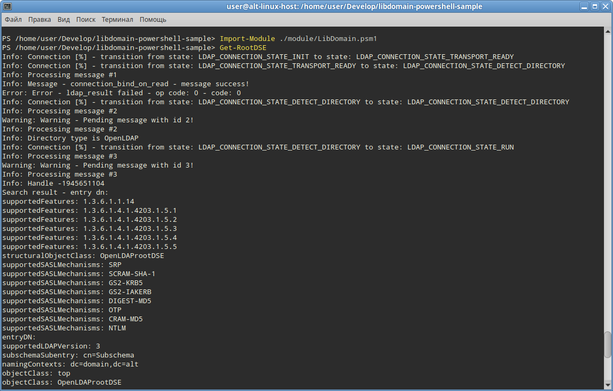

Как построить библиотеку libdomain и модули PowerShell
1. Установка PowerShell на Linux
Чтобы построить библиотеку libdomain и модули PowerShell на Linux, сначала необходимо установить PowerShell.
На дистрибутивах «Альт» для этого достаточно установить пакет powershell:
apt-get install powershellНа других дистрибутивах можно выполнить следующие шаги:
1. Скачать пакет для требуемого дистрибутива с официальной страницы выпусков PowerShell на GitHub: Релизы PowerShell
2. Установить пакет, следуя инструкциям по установке, предоставленным для конкретного дистрибутива.
2. Установка .NET и SDK на Linux
Следующий шаг после установки PowerShell — настройка среды .NET и необходимых SDK.
На дистрибутивах «Альт» для этого достаточно установить пакет dotnet-sdk-7.0:
apt-get install dotnet-sdk-7.0На других дистрибутивах можно выполнить следующие шаги:
1. Скачать SDK .NET для Linux с официальной страницы загрузки .NET: Загрузка .NET
2. Установить SDK .NET для Linux, следуя дополнительным инструкциям по установке, предоставленным для конкретного дистрибутива.
3. Построение нативного модуля
Для построения нативного модуля для libdomain необходимо выполнить следующие команды:
$ cd native && mkdir build && cd build && cmake .. && make -j `nproc`4. Построение модуля на C#
Построение модуля на C# для PowerShell включает использование .NET SDK. Базовый план:
$ cd src && dotnet build5. Объединение модулей
После построения нативного и C# модулей, возможно, потребуется их объединить.
Для этого необходимо скопировать бинарные модули в папку bin:
# cp native/build/src/libdomain_wrapper.so ./bin/ && cp src/bin/Debug/net7.0/LibDomain.dll ./bin/
Как использовать
Запуск сценариев
Для запуска сценариев следует запустить PowerShell:
powershellИ выполнить команды:
Import-Module ./module/LibDomain.psm1 Get-RootDSE
Программа состоит из следующих модулей:
1. LibDomain.dll. Обёртка для нативной библиотеки libdomain_wrapper.so предоставляет возможность импорта функций из нативной библиотеки. Исходные коды для этого модуля находятся в каталоге src.
using System;
using System.Runtime.InteropServices;
namespace LibDomain
{
public class Native
{
[DllImport("libdomain_wrapper.so")]
public static extern int get_root_dse();
}
}
2. libdomain_wapper.so. Этот модуль загружает libdomain и предоставляет функцию get_root_dse. Эта функция затем вызывается из LibDomain.dll. Модуль находится в каталоге native.
#include <libdomain/common.h>
#include <libdomain/domain.h>
#include <libdomain/directory.h>
#include <libdomain/entry.h>
#include <libdomain/connection_state_machine.h>
#include <stdio.h>
#include <stdbool.h>
#include <talloc.h>
static char* LDAP_DIRECTORY_ATTRS[] = { "*", "+", NULL };
static void exit_callback(verto_ctx *ctx, verto_ev *ev)
{
(void) ctx;
(void) ev;
verto_break(ctx);
}
static enum OperationReturnCode connection_on_error(int rc, void* unused_a, void* connection)
{
(void)(unused_a);
verto_break(((ldap_connection_ctx_t*)connection)->base);
fprintf(stderr, "Unable to perform operation!\n");
exit(EXIT_FAILURE);
return RETURN_CODE_SUCCESS;
}
static void connection_on_update(verto_ctx *ctx, verto_ev *ev)
{
(void)(ctx);
struct ldap_connection_ctx_t* connection = verto_get_private(ev);
if (connection->state_machine->state == LDAP_CONNECTION_STATE_RUN)
{
verto_del(ev);
search(connection, "", LDAP_SCOPE_BASE,
"(objectClass=*)", LDAP_DIRECTORY_ATTRS, 0, NULL);
}
if (connection->state_machine->state == LDAP_CONNECTION_STATE_ERROR)
{
verto_break(ctx);
fprintf(stderr, "Error encountered during bind!\n");
}
}
int get_root_dse()
{
TALLOC_CTX* talloc_ctx = talloc_new(NULL);
char *ldap_server = "ldap://127.0.0.1:3890";
char *ldap_username = "admin";
char *ldap_password = "password";
char *ldap_bind_dn = "dc=domain,dc=alt";
const int update_interval = 1000;
ld_config_t *config = NULL;
config = ld_create_config(talloc_ctx, ldap_server, 0, LDAP_VERSION3, ldap_bind_dn,
ldap_username, ldap_password, true, false, false, true,
update_interval, "", "", "");
const int exit_time = 10000;
LDHandle *handle = NULL;
ld_init(&handle, config);
ld_install_default_handlers(handle);
ld_install_handler(handle, connection_on_update, update_interval);
ld_install_handler(handle, exit_callback, exit_time);
ld_install_error_handler(handle, connection_on_error);
ld_exec(handle);
ld_free(handle);
talloc_free(talloc_ctx);
return 0;
}
3. Сценарии PowerShell. Сценарий импортирует LibDomain.dll и вызывает [LibDomain.Native]::get_root_dse() из него. Сценарии находятся в каталоге module.
using namespace System.Management.Automation
$importModule = Get-Command -Name Import-Module -Module Microsoft.PowerShell.Core
&$importModule ([IO.Path]::Combine($PSScriptRoot, '..', 'bin', 'LibDomain.dll')) -ErrorAction Stop
Function Get-RootDSE {
<#
.SYNOPSIS
Gets the RootDSE from LDAP server.
#>
$rootDSE = [LibDomain.Native]::get_root_dse()
}